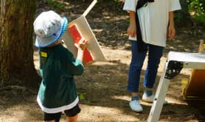

狭山市狭山台中央公園
Interview
NPO法人本気であそぶ子応援団
通称：ほんきっこ
レポート：住協広報部
1.元気に遊びまくる子どもたちの姿
経験豊富なスタッフにしっかりと見守られながら、例えば、自分の力で火を起こしてみたり、自由な工作やお手製のアスレチックを楽しんだり、泥にまみれたり。もう久しく見ていない、狭山台中央公園へ訪れた私たちが見たのは、ゆたかな想像力を爆発させて元気に遊びまくる子どもたちの姿でした。
この自由なイベントを企画し、運営する『NPO法人本気であそぶ子応援団』は、学校では教えてくれない“本気の遊び”を子どもたちに自由に体験させてくれる地域ボランティアによる任意の団体です。ベテランのスタッフさんたちは、子どもたちをただ遊ばせるだけでなく、その豊かな人生経験を活かして、木工作品展や、泥だんご選手権、ベーゴマ選手権、ビー玉制作など、昔ながらのイベントを開催し、さらに遊びを盛り上げてくれます。
- 


小学生未満は保護者同伴、小学生以上の子どもは完全に自由参加。1日に訪れる人の総数は100人にも及ぶほどの人気スポットです。毎月第二週の土日に開催され、参加者は大体約250人、夏休みにはなんと1200人にも及ぶたくさんの人々が訪れます。
「自分で考えて何かをやること」で、子どもたちの主体性や経験値をはぐくみ、たくましく生きていく力をつけることを目的としているそうです。
2.木工材には、住協建設から端材を提供
住協グループでは、木造建設においてどうしても出てしまう余分な端材をただ廃棄物として処分するのではなく、地域の子どもたちの教育への一助として、また環境保全等の観点として、それを活かすことのできる団体や企業に提供しています。
本来捨てられてしまうはずの端材は、自由な発想の工作物や、遊び心をくすぐるアスレチックに生まれ変わりました。
3.代表者インタビュー
『NPO法人本気であそぶ子応援団』代表の塩野谷さん
「屋外は最高のおもちゃ箱です。外にいると何もしなくても勝手に刺激がやってくるのだから。例えば気温が変化するのを肌で感じたり、珍しい昆虫の発見に驚いたり。いくら凝ったおもちゃを屋内に用意したところで、この“外で遊ぶ”刺激には勝てません。子どもたちは自由に、好き勝手に、五感を働かせて遊んでもらいます。もちろん、責任はすべて保護者の方に負って頂くことになっています。そうしなければ、禁止事項を課すことになってしまい、本当に心ゆくまで遊びを楽しむことができないのです。私たちは、地域の人々や行政と協働し、元気な子どもの声があふれる地域社会を形成することを目的としています。」